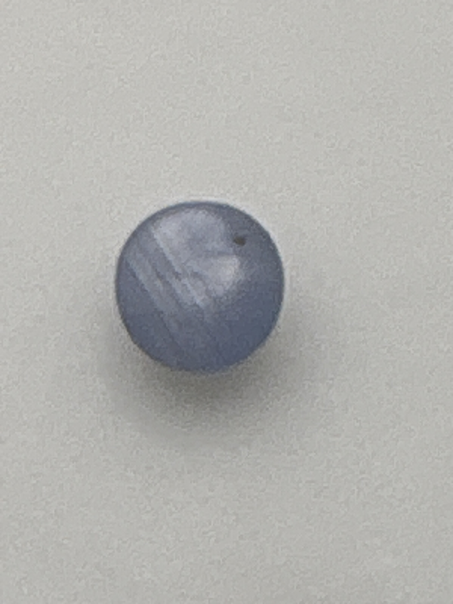

The Gem Drawer › No. 72

A domed grey-blue cabochon labeled star sapphire; no star visible in the photos.
| Catalogue no. | #72 |
|---|---|
| As labeled | Sapphire - labeled "Blue Star Sapphire" (asterism not clearly visible in photos; recommend confirming star effect under direct light before listing as such, see notes) |
| Shape / cut | Cabochon (round, domed) |
| Weight | Not recorded |
| Measurements | Not recorded |
| Colour | Grayish-blue/lavender |
| Clarity / condition | Not recorded |
Interested in this stone, or in the collection as a whole? Terry VanWormer can answer questions about it.
Click here to inquireor email Terry directly at maxrebo34@gmail.com